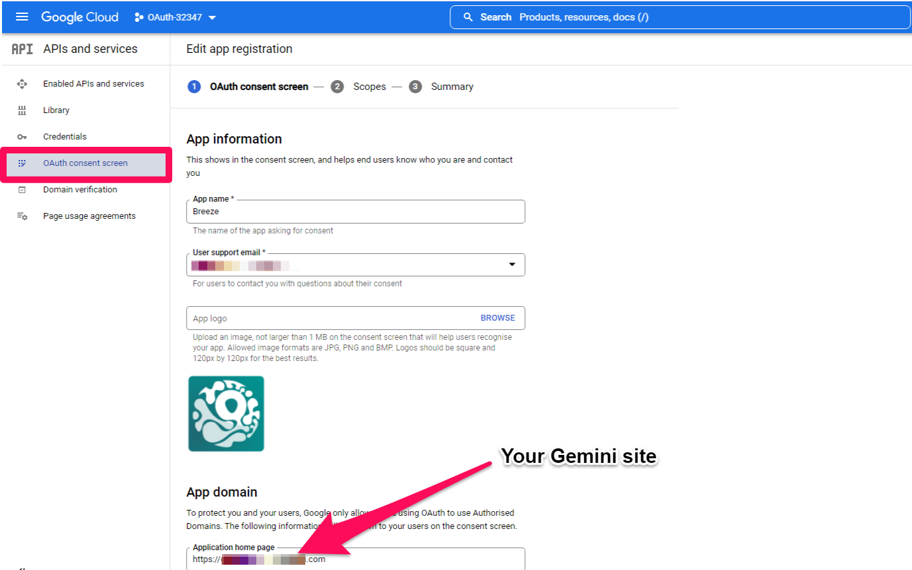
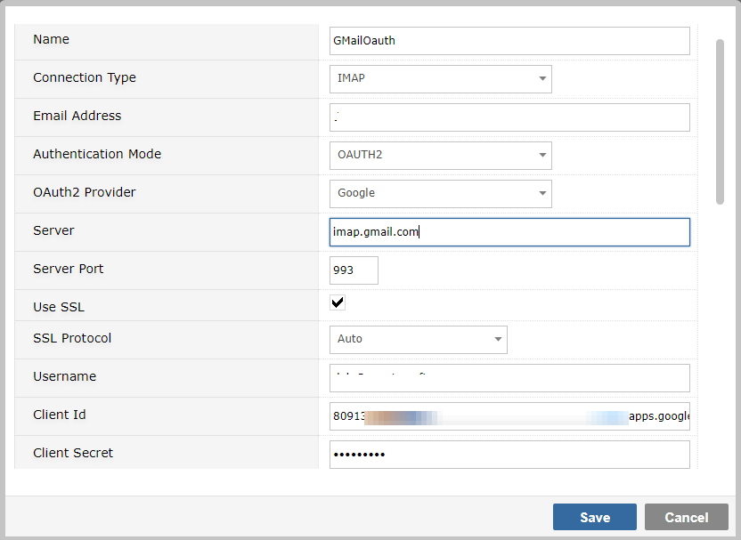
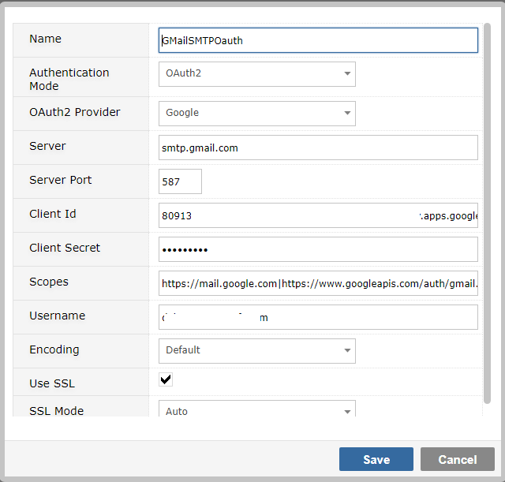

NoteThis feature is not available in versions of Gemini prior to 7.2.0
NoteGoogle has a much simpler option - simply generate an App Password (search online for details) - you then use the App Password in place of the User Password.
NoteFor OAuth you must have a paid GMail account. For both OAuth and App Passwords you should enable 2FA on the account for verification.
Configuring OAuth is a two-step process. First you configure GMail Services to know about Gemini. Then you configure Gemini to use these services.
On the menu of services, select OAuth Consent Screen. The settings are very simple to understand and Google provides detailed documentation on all of them.

To use OAuth with Gemini mailboxes, you should configure the connection as IMAP

Specify OAuth2 as the Authentication Mode
When you do this you will be prompted for an OAuth Provider. Select Google.
You must use SSL and we recommend you leave the SSL protocol as Auto so Gemini can select the most modern.
4 new fields have been added to Gemini's Mailbox/SMTP configuration
Save your configuration when you have provided the mandatory details. You will be redirected and required to authenticate with your OAuth provider
Confirm the access permissions and you'll be returned to Gemini, where you should see a success message
OAuth configuration is the same for both the generic system mailbox in System Email Options, and the SMTP mailbox(es) for Breeze Ticketing
Navigate to Ticketing...SMTP Servers and edit or add a new SMTP connection

Provide a name for your SMTP Server. For GMail OAuth, the server and port should be as shown above.
Select OAuth2 from the Authentication Modes drop down. You will see the form present new fields.
The scopes will be automatically populated, but complete the rest of the fields as per the GMail Application details created earlier.
Save the configuration. On Ticketing SMTP servers you should get a simple success message. On System Email Options, you will get a verbose trail of Gemini testing the SMTP connection.